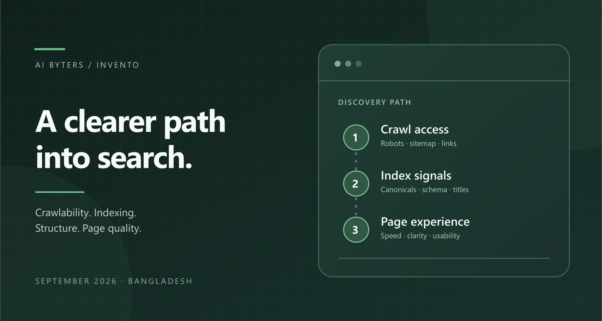

SEO & content · Client engagement
Help people find and understand Invento’s work
AI Byters strengthened Invento’s crawl access, internal links and page content, starting with an August baseline and checking changes through early October 2026.
- Contribution
- AI Byters for Invento Software Limited
- Scope
- Technical SEO, content structure and page experience
- Project context
- 31 August to 7 October 2026

Pages not indexed
199 → 112
Recorded backlog comparison, not a traffic or revenue measure.
Orphan posts and case studies
46 → 0
Content connected to the site’s internal reading paths.
Good desktop Core Web Vitals
90 URLs
Verified desktop status at close. No baseline change is claimed for this count, and it is not a mobile performance result.
Keep the expertise, remove the access problems
Invento already had commercial pages and engaged organic visitors. The baseline identified crawl problems, isolated content and pages that did not explain the company’s expertise clearly.
Technical fixes and editorial work were tracked separately so a rewrite would not stand in for a crawl correction.
Connect the page to the question it answers
AI Byters corrected crawl signals, connected orphan pages, improved titles and rewrote priority copy around specific reader questions. Images, scripts and structured data received attention alongside the words.
Verification checked the backlog, content connections and desktop performance groups. Those publishing outcomes do not demonstrate a particular sales increase or guaranteed search position.
How the work connects
- 01
Establish baseline
- 02
Fix crawl access
- 03
Connect useful pages
- 04
Improve content
- 05
Verify changes
What this work establishes
Recorded checks show the not indexed backlog falling from 199 to 112 pages, orphan content falling from 46 to zero, and 90 desktop URLs in Good Core Web Vitals groups.
Results refer to the recorded August to early October 2026 work. Search visibility also depends on demand, competition and later changes to the site.
Inspect the work or discuss the approach
What would make your team’s work easier?
Tell me who uses the workflow, which records it depends on and where the handoff slows down.
Discuss your use case Email meProject notes by Mehrab Mashrafi. Updated .